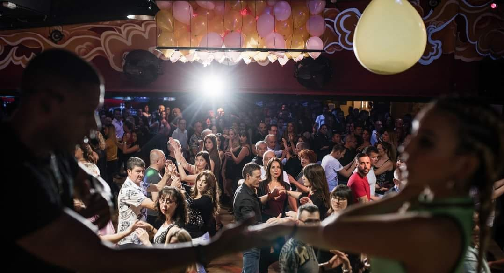

PROYECTO SBK
Se trata de una moda que está evolucionando constantemente puesto que es una actividad que nos permite realizar ejercicio y al mismo tiempo conocer a otras personas.
Además de estos factores, hemos de destacar que es una actividad que conocemos profundamente ya que mantenemos relación directa con este sector, convirtiéndo esto en otro motivo fundamental para la realización de este trabajo.
El objetivo principal es realizar un modelo de clases en una academia de baile de Andorra, para demostrar que su realización es económicamente viable.
Esto se basará en la apertura de clases de baile de salsa, bachata y kizomba (SBK), cuyo fin será la prestación de un servicio, que en este caso será la enseñanza de una actividad artística como el baile.
Además de ello, el modelo de negocio llevará a cabo distintas iniciativas relacionadas con la responsabilidad social, lo cual nos aportará un rasgo diferenciador a tener en cuenta respecto a la competencia.